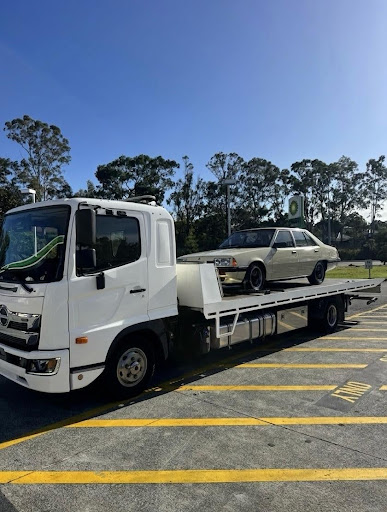

Picture this: you're driving home along Finucane Road after a long day, your engine starts spluttering, and your car rolls to a stop somewhere between Cleveland and Victoria Point. It's dark, you're on a busy stretch, and you have no idea who to call.
This is the reality for thousands of Brisbane Bayside drivers every year. Whether you're stuck on the road in Redland Bay, dealing with a breakdown near Wellington Point, or involved in an accident in Cleveland, knowing who to call — and what to expect — can make all the difference.
Here's everything Redland Bay, Cleveland, and Victoria Point drivers need to know about emergency towing in the Redlands area.
Why Fast Emergency Towing Matters on Brisbane's Bayside
The Redlands isn't like inner-city Brisbane. The roads here — from the arterials through Capalaba to the quieter coastal stretches near Thorneside and Birkdale — often mean longer response times from services that aren't locally based.
That's why having a towing company that actually knows the Redlands matters. A local operator based in Capalaba can reach Cleveland, Alexandra Hills, and Mount Cotton far faster than a Brisbane CBD fleet dispatched through a national call centre.
When you're stranded on the side of the road, every minute counts.
Read this blog: How 24/7 Towing Services Support the Emergency Response System
Common Roadside Emergencies Across the Redlands
From the backstreets of Victoria Point to the main roads connecting Lota and Wynnum, Redlands drivers face a range of on-road emergencies. The most common include:
- Mechanical breakdowns — engine failures, overheating, or suspension issues
- Flat tyres — especially on longer rural stretches near Mount Cotton or Redland Bay
- Dead batteries — a frequent issue during Queensland's humid summers
- Accident damage — requiring immediate accident towing to clear the scene safely
- Running out of fuel— more common than you'd think on the longer roads through the Redlands
Each of these situations calls for a professional response — not just a tow, but a calm, knowledgeable operator who can assess the scene and get you moving safely.

What to Expect from a Professional Emergency Tow Truck Service
If you've never needed emergency towing before, the process can feel overwhelming. Here's a straightforward breakdown of what a reputable service like OG Towing will do:
- 1. Take your call immediately— no automated systems, no hold music
- 2. Confirm your exact location — knowing whether you're near the Cleveland CBD, on Shore Street, or further out toward Redland Bay helps pinpoint your position fast
- 3. Dispatch a truck promptly — from the Capalaba base, OG Towing can reach most Redlands suburbs quickly
- 4. Assess your vehicle on arrival — before hooking up, the team checks the situation to ensure the right tow method is used
- 5. Transport your vehicle safely — whether it's a standard sedan, a lowered car, or heavier machinery, the right equipment matters
The goal isn't just to move your car. It's to make a stressful situation as smooth as possible.
Towing Services Available Across Cleveland, Victoria Point and the Redlands
OG Towing offers a comprehensive range of towing and roadside services across the Redlands region and greater Brisbane Bayside area. Whatever your situation, there's a service to match:
Emergency & Accident Towing
When time is critical — whether it's a collision near Cleveland's waterfront or a breakdown on the road between Birkdale and Thorneside — emergency towing gets your vehicle off the road and out of harm's way, fast.
Insurance Towing
Already dealing with your insurer? OG Towing works with insurance providers to streamline the process. Less paperwork stress for you, especially when you're already dealing with the aftermath of an accident.
Lowered Car Towing
Standard tow trucks and low-profile vehicles don't mix well. For lowered cars common among enthusiasts in the Capalaba and Alexandra Hills area, specialised equipment ensures your vehicle doesn't sustain further damage during transport.
Machinery Towing
For trades and business owners across the Redlands — from Mount Cotton to Redland Bay — machinery towing handles the heavy stuff. Whether it's a trailer, industrial equipment, or large loads, this is a job for professionals with the right rigs.
Cash for Cars
Have a vehicle that's beyond repair? OG Towing also offers a cash for cars service across Brisbane Bayside and the surrounding Redlands region. Turn a dead vehicle into cash without the hassle of private sale listings.
Container Moves
A less-talked-about but highly useful service — container moves for residential and commercial clients across the Capalaba area and the wider Redlands.
Serving the Redlands: Our Full Coverage Area
OG Towing operates across the full Redlands region and beyond, covering:
- Capalaba (home base)
- Cleveland and the surrounding waterfront suburbs
- Victoria Point and Redland Bay
- Wellington Point and Alexandra Hills
- Birkdale, Thorneside, and Lota
- Mount Cotton and further south Greater Brisbane on request
If you're unsure whether you're in the service area, call anyway. The team based in tow truck Brisbane is familiar with every back road and main arterial across Brisbane's Bayside.
Tips for Redlands Drivers: What to Do While You Wait for a Tow Truck
Staying safe at the roadside is just as important as getting a truck dispatched. While you wait:
- Turn on your hazard lights immediately — visibility is critical, especially at night near Redland Bay or on rural stretches near Mount Cotton
- Move away from the vehicle if it's safe to do so — particularly important near high-traffic roads through Cleveland or Capalaba
- Stay on the line with your towing provider if needed — they can guide you through next steps
- Note your exact location — street name, landmark, or nearest intersection helps the driver find you faster
Small steps like these can significantly reduce risk while you wait for help to arrive.
Don't Get Caught Without a Reliable Towing Number
Whether you're a daily commuter through Capalaba, a weekend driver heading down to Redland Bay, or a tradesperson working across Mount Cotton and Victoria Point — the time to find a reliable towing service is before you need one.
Save OG Towing's number in your phone now. When you're stuck on the side of a Redlands road at night, you'll be glad you did.
Visit or call the team directly for fast, professional emergency towing in Cleveland QLD, Victoria Point, Redland Bay, and the entire Brisbane Bayside region.
Yes, we provide 24/7 emergency towing services in Cleveland QLD and the surrounding areas. Our team is always ready to assist you, regardless of the time or location.
Our Capalaba-based team aims for fast response times across the Redlands and Brisbane Bayside region.
Yes, we use specialised towing equipment suitable for lowered, prestige, and modified vehicles to avoid damage during transport.
Absolutely. We provide accident towing and can assist with insurance towing for a smoother claims process.
We service various areas within the Redlands region, including Capalaba, Cleveland,
Redland Bay, and surrounding suburbs. Our goal is to provide quick and reliable
towing services to all our customers in these areas.